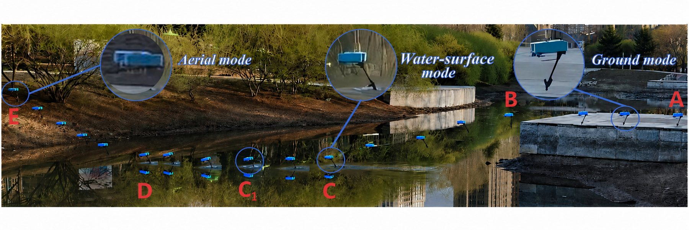

Research assistant · Harbin Institute of Technology · 2026
Quadrotor–Hydrofoil Aerial–Aquatic–Terrestrial Vehicle
A lightweight hybrid vehicle that uses quadrotor flight and a controllable hydrofoil for cross-domain mobility.
My contribution
Contributed to the hydrofoil mechanism, electronic interfaces, low-level control, and outdoor testing.
3.3 m/sreported peak surface speed
3.56× / 1.71×reported taxiing efficiency vs. flight